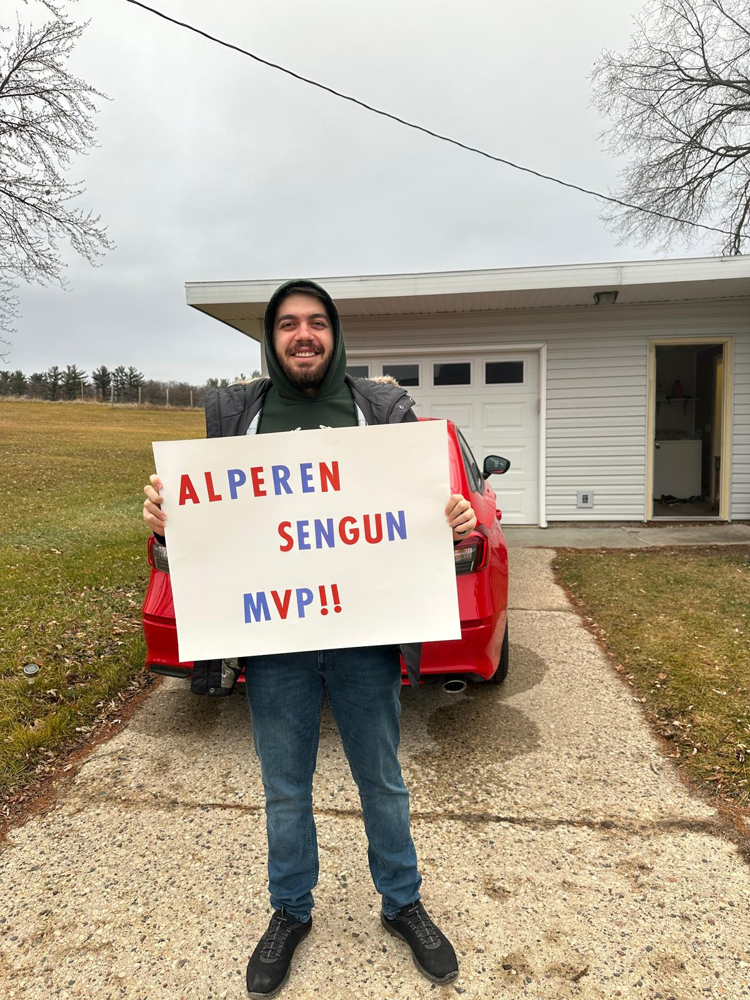
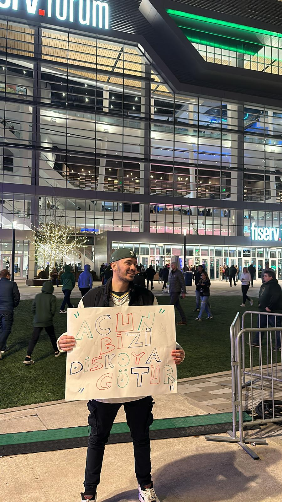

Turkish Pride at the NBA Game
When my coworker from the sports bar told me he got two tickets for the Houston Rockets vs Milwaukee Bucks game, I was thrilled—because our only Turkish NBA player, Alperen Şengün, was coming to Wisconsin!
We quickly prepared handmade signs, gathered our Turkish flag, and counted down the days. Then we found out that Acun Ilıcalı—a famous TV host and producer from Turkey—would also attend, along with three contestants from the popular show *Survivor Türkiye*. That news made everything even more exciting.
On game day, I looked forward to two things: seeing Alperen live and hopefully snapping a photo with Acun Ilıcalı. Lucky for us, Acun Abi came over and kindly took a picture with us.
The game itself was amazing. Although I was rooting for Alperen as a fellow Turk, I was also happy when our home team, the Milwaukee Bucks, won. It was a night of basketball, culture, and unforgettable memories.